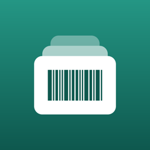

Privacy Policy
Short version: Countdeck does not collect any personal data. There is no account, no analytics, no advertising and no tracking. The developer has no server and cannot see your inventory.
Data stored on your device
Everything you enter (items, quantities, prices, photos, categories, locations, notes and stock history) is stored only on your device, inside Countdeck's app storage. It is included in your normal device backup. Deleting the app deletes this data.
iCloud sync (optional)
If you turn on iCloud sync, your inventory is also stored in your private iCloud database through Apple's CloudKit, so it can sync between your devices. This data belongs to your Apple account; the developer has no access to it. Apple's handling of iCloud data is described in Apple's Privacy Policy. Turning sync off stops syncing; you can delete the stored data in iPhone Settings › your name › iCloud › Manage Storage.
Camera
Countdeck uses the camera only when you scan a barcode or take an item photo. Images are processed on your device. Nothing is uploaded.
Notifications
Low-stock alerts are local notifications created on your device. No push server is involved.
Purchases
Subscriptions and the lifetime purchase are processed by Apple through the App Store. Countdeck only receives confirmation of which plan is active. The developer receives no payment details and no personal information from Apple, apart from anonymous sales statistics.
Data shared with third parties
None. Countdeck contains no third-party SDKs for analytics, advertising or crash reporting. When you export a CSV or share labels, the file goes only where you send it.
Children
Countdeck is not directed at children and collects no data from anyone.
Your rights
Because no personal data reaches the developer, there is nothing to access, correct or delete on the developer's side. Your data on your device and in your iCloud is under your control. Under the GDPR you may still contact the controller below with any question, and you have the right to lodge a complaint with a data protection supervisory authority.
Controller
Niclas Collmer
Erzbergerstraße 4
72108 Rottenburg am Neckar
Germany
Email: plain.signal.agency@gmail.com
Changes
If this policy changes, the new version will be posted on this page with a new date.